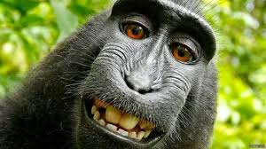
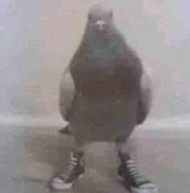
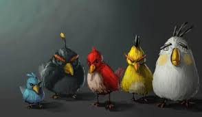

Memes como Imagenes
Un mono sonriendo

Paloma con tennis en baja calidad

Los pajaros del angry birds serios

Estas imágenes son situaciones separadas que pueden generar risa según el contexto que se les ponga
tal cual como los memes de antes, pero cambian por nuevas que han salido.
Ir a punto 4